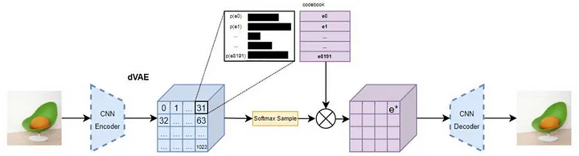
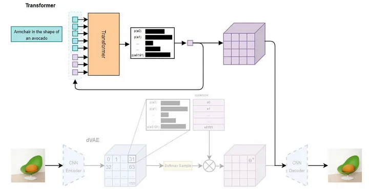

AI image generation
This and the following chapters will focus on the topic of AI image generation. This is a very broad field, so we will start with some basics and then move on to more specific topics. We will also try to give an overview of the current state of the art in this field.
AI image generator basics
You can not talk about the history of AI image generation without talking about GANs (Goodfellow et al., 2014). To have a nicer chunking of the courses contents though, we will talk about them in the chapter AI image generation II and focus on more recent approaches here. GANs are the architecture behind the page thispersondoesnotexist.com and its clones.
DALL-E
The reigning position of GANs as the de-facto standard for AI image generation was challenged by the release of DALL-E by OpenAI in January 2021. DALL-E is a text-to-image model, which means that it can generate images based on a text description.
This model was trained on a dataset containing image-caption pairs in two parts:
- A Variational Autoencoder (VAE)1 to compress the image data into a latent space. This means, that each image was compressed into a 32x32 grid, for which each grid cell was encoded as a discrete probability distribution with 8192 dimensions. This latent “token”-space is, although the architecture is pretty different, quite close to what our text-transformers outputted in the MLM-task.
- A Transformer to learn the relationship between text-captions and the latent space. This was done by encoding images using the pretrained VAE und argmax choosing the 32x32-token-representation of the image. The text-captions were limited to 256 tokens and concatenated with the 1024-dimensional image-tokens. The model is then trained to predict the next token in the sequence, which is either a text or an image token, similarly to the learning-paradigm we discussed when talking about the transformer-training.
1 Since the latent space these images are compressed to is of a defined set of classes, the authors call the model a discrete VAE which makes a lot of sense.
The resulting 1024 image-tokens can then be fed into the decoder-Block of the VAE to generate an image. An illustration of the training-process can be seen in Figure 9.1.


CLIP
Close to the release of DALL-E, the team at OpenAI did also publish CLIP (Radford et al., 2021). The paper, which introduced a contrastive2 method to learn visual representations from images and text descriptions, bridged the gap between image and text embeddings. This contrastive principle is illustrated in Figure 9.2.
2 Contrastive also being the namesake of the method (Contrastive Language-Image Pre-training)
A matrix of all combinations of images and text descriptions is created. The model then learns to predict the correct image for a given text description and vice versa. This is done by encoding both the image and the text into a vector space, which is then used to calculate the similarity between the two vectors. to do this, both a vision- and a text-transformer are trained as encoders to maximize the cosine similarity between the encoded image and text for each pair in the matrix and minimizing it for all other pairs. The authors also show that this method can be used to transfer the learned representations to other tasks, such as zero-shot classification.
Diffusion Models
Though models like DALL-E and CLIP represented significant milestones in the journey of text-to-image generation, the field continued to evolve rapidly, leading to the advent of Stable Diffusion. This evolution was partly inspired by the need for more control over the generation process and a desire for higher-quality outputs at lower computational costs.
The GAN-architecture (first published in 2014) was the de-facto standard for quite some time and though the central principle of their successors diffusion models was published in 2015 (Sohl-Dickstein et al., 2015), it took until 2020 for them to beat GANs on most benchmarks (Dhariwal & Nichol, 2021).
The diffusion model’s central principle is training on a sequence of gradually noised images. This process involves systematically adding noise to an image over a series of steps, progressively transforming the original image into pure noise. The model is trained to reverse this process by predicting the noise added to each image, based on the current step in the noising sequence and the noisy image itself.
This step-by-step noise addition serves two main purposes:
- Gradual Complexity: By progressively corrupting the image, the model can learn to reverse the process in manageable steps, leading to a better understanding of how to reconstruct data at each stage.
- Mathematical Framework: This approach aligns with the stochastic differential equation (SDE) framework, enabling the model to map the noise distribution back to the original data distribution iteratively.
This approach, rather than predicting the denoised image directly, also offers practical advantages: it allows for efficient parallelization during training since the noise is parameterized by a scheduler and can be applied dynamically. This stepwise noise-addition is visually represented in Figure 9.3.
Rombach et al. (2022) build upon this principle when suggesting their Latent Diffusion Model architecture and introduced a few key innovations to achieve their state-of-the-art results:
They introduce a method called latent diffusion, which allows them to generate high-resolution images more efficiently by operating on a lower-dimensional representation of the image data. This is achieved by using an autoencoder (VAE) to compress the original image into a smaller latent space and then applying the diffusion process to this compressed representation. This process is built on work by Esser et al. (2021) and is conceptually similar to the dVAE-approach utilized by DALL-E.
They use a denoising diffusion probabilistic model (DDPM) as the fundamental generation process for their architecture, which allows them to generate high-quality images with fewer steps compared to previous methods. This DDPM model is implemented as a time-conditional UNet.
To improve the quality of generated images and reduce artifacts, they integrate a cross-attention mechanism into the UNet architecture. This mechanism conditions the denoising process directly on the input text embeddings, allowing the diffusion process to generate images that align better with the given text prompt.
To improve the results on inference, they additionally utilize classifier-free guidance (Ho & Salimans, 2022), a technique where the model is run once with the prompt (“conditional on the prompt”) and once with an empty pseudo-prompt (“unconditional”). A weighted combination of the conditioned and unconditioned predictions is used to enhance the alignment with the text prompt while preserving image quality. This is done using the following formula:
\[ \text{Guided Prediction} = \text{Unconditioned Prediction} + w \cdot (\text{Conditioned Prediction} - \text{Unconditioned Prediction}) \]
Where \(w\) is the weight with which the conditioned prediction is preferred over the unconditioned one.
This architecture has been widely adopted and is used as a foundation3 for many state-of-the-art text-to-image models, including Stable Diffusion, as well as DALL-E 2.
3 Or at least as an orientation.
Test out a SD-model!
Use the colab-Notebook you can find here to test out Stable Diffusion using the huggingface diffusers-module and generate some images.
Print out the model architecture and try to map the components of the model to the description above.
Generate some images using different prompts, guidance_scales and seeds. What do you observe?
There are many pages with tips on how to “correctly” prompt SD-models to improve their performance. Find one and test the described tips out. What do you find?
Test the
num_inference_steps-parameter. How does it affect the quality of the generated image?
Multimodal Models
So called multimodal models are models that are trained to fit one latent distribution for multiple modalities. This means that instead of only using the image encoder and decoder with some kind of informed diffusion model to generate images in between, encoders and decoders for multiple modalities are trained to map onto the same latent space. This results in a family of models that can take inputs in multiple modalities and create outputs in a similar fashion. There are different approaches to solve this task, of which two will be discussed in the following section
Unidiffuser
One of the first multimodal models is Unidiffuser, an architecture described in Bao et al. (2023). The architecture is illustrated in Figure 9.5.
The model is based on a transformer-encoder and decoder that are trained to map inputs of multiple modalities onto the same latent space. In the text-image implementation, there are two encoders and two decoders. The image encoder consists of two parts. One is the VAE-encoder from Stable Diffusion, which maps the input image into a lower dimensional representation. This is appended by the CLIP-image-embedder described in Radford et al. (2021). The text gets also encoded by the CLIP-trained model used in Stable Diffusion.
For image-decoding, the Stable Diffusion VAE-decoder is used to map the latent space back into an image. For text-decoding, a GPT-2-based (Radford et al., 2019)model is finetuned to take the latent space embeddings as a prefix-embedding and to autoregressively generate text. During finetuning, the CLIP-embeddings were held constant and only the GPT-2-parameters were updated. This means that the already defined latent space learned by the CLIP-model is used to map the GPT-2 decoder onto it.
These embeddings are then used to train a U-ViT (Bao et al., 2022) model, which takes the concated time-step-tokens, noised text- and image-embeddings as input-tokens and outputs the estimated noise-vector for the denoising process.
Use the same colab-notebook as before to test out Unidiffuser using the huggingface diffusers-module and generate some images and text.
Try the tips you tested on the basic SD-model and test whether the model accurately generates descriptions for your generated images.
Present your results of both tasks to the course and upload your adapted notebook to moodle.
Llama 3.2
Llama 3.2 introduced image-understanding to the Llama-model family. Similarly to the decoder-training in the unidiffuser case, this was done by mapping existing embeddings onto a new latent space. Instead of finetuning a part of the model on a constant other embedding though, Meta describes a slightly different approach in their launch-blogpost (“Llama 3.2,” n.d.).
They describe a procedure in which they use both a pretrained image encoder as well as a fixed pretrained language model. The embeddings of both models are aligned using a special third adapter model, that builds on multiple cross-attention layers to map the encoded image onto the language models text-embedding space. The encoder and adapter were then trained using image-text pairs to correctly generate the text-labels for the images.
Further Reading
This blogpost about the reparametrization trick
This Medium-article about how the first DALL-E worked
The tutorial-paper by Doersch (2021) about the intuition and mathematics of VAEs